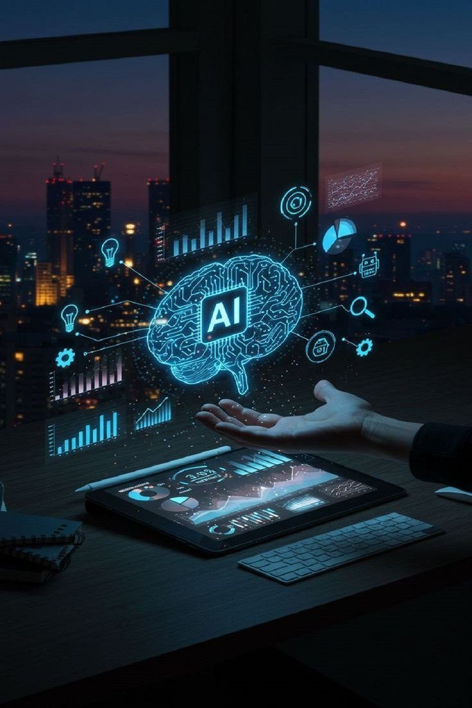
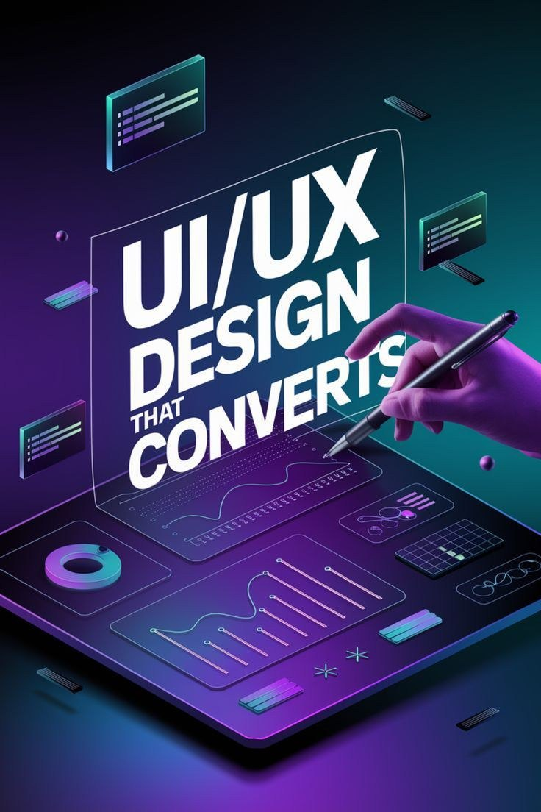

Intelligence Artificielle
Fasciné par le potentiel du Machine Learning et de l'IA générative. J'aime comprendre comment les algorithmes peuvent résoudre des problèmes complexes et transformer notre quotidien.
Au-delà du code, je nourris un grand intérêt pour les technologies émergentes et la création visuelle.

Fasciné par le potentiel du Machine Learning et de l'IA générative. J'aime comprendre comment les algorithmes peuvent résoudre des problèmes complexes et transformer notre quotidien.

Grâce à Figma et Photoshop, j'explore l'art de créer des interfaces utilisateur esthétiques et intuitives. Pour moi, un bon code doit toujours s'accompagner d'une excellente expérience visuelle.
De la structure en HTML/CSS aux frameworks backend comme Laravel, je suis passionné par l'architecture du web et la création de solutions digitales de bout en bout.